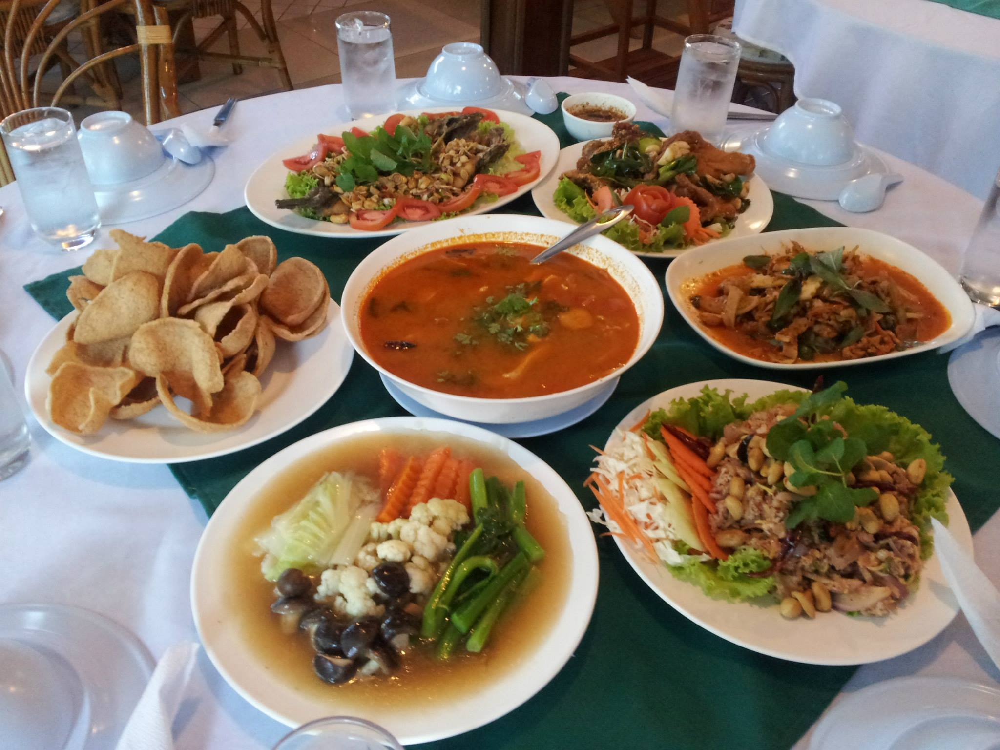
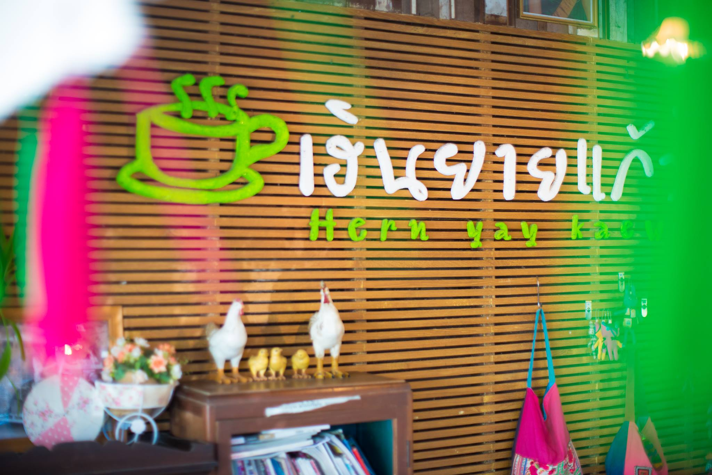

แนะนำสถานที่ทานอาหาร
Fren Restaurant

ร้านชื่อดังที่อยู่คู่จังหวัดแม่ฮ่องสอนมายาวนานกว่า 25 ปี มาในรูปแบบบ้านไม้สไตล์ล้านนา รายล้อมด้วยต้นไม้ร่มรื่น ให้ความรู้สึกเป็นบ้านทรงไทยน่านั่ง ตกแต่งในสไตล์เหนือผสมพม่า ในส่วนเมนูอาหาร ที่นี่เน้นเมนูอาหารเหนือเป็นหลัก รวมถึงเมนูอาหารอร่อยรสชาติจัดจ้านสไตล์ไทย ใครชอบอาหารเหนือ บอกเลยว่าห้ามพลาด
- พิกัด : https://goo.gl/maps/BnUdzSYgKdXuCeEK6
- ที่อยู่ : ถนนขุนลุมประพาส ตำบลจองคำ อำเภอเมืองแม่ฮ่องสอน แม่ฮ่องสอน
- เปิดบริการ : 11.00 - 21.30 น.
- โทร : 0-5361-1374
- เว็บไซต์ : https://www.facebook.com/Fern-Restaurant
ร้านอาหารบ้านทรงไทย
ร้านอาหารบ้าานทรงไทย ถือเป็นร้านอาหารสวย บรรยากาศดี พร้อมเสิร์ฟอาหารอร่อย ที่มีทั้งอาหารไทย อาหารเหนือ อาหารใต้ รวมถึงขนม เครื่องดื่ม ที่เสิร์ฟตลอดทั้งวัน ในส่วนบรรยากาศร้าน สวยงาม ร่มรื่น มีมุมให้นั่งมากมาย แถมภายในตัวร้านยังตกแต่งด้วยต้นไม้อีกด้วย เป็นร้านอาหารฟีลครอบครัวที่ต้องแวะจริงๆ
- พิกัด : https://goo.gl/maps/8WmtsQRaXjd9zSLL6
- ที่อยู่ : 138 หมู่ที่ 5 บ้านท่าโป่งแดง ตำบลผาบ่อง อำเภอเมืองแม่ฮ่องสอน แม่ฮ่องสอน
- เปิดบริการ : 08.30 - 15.30 น. / 17.30 - 21.30 น.
- โทร : 09-0316-3176, 0-5368-4033
- เว็บไซต์ : https://www.facebook.com/Baansongthaimhs/
ร้านอาหารไข่มุก
เรียกว่าเป็นอีกหนึ่งร้านอาหารยอดนิยม ที่ใครมาเที่ยวจังหวัดแม่ฮ่องสอนจะต้องรู้จักกับร้านอาหารไข่มุก ร้านอาหารในเรือนไม้สักเก่าแก่ ที่อยู่คู่คนแม่ฮ่องสอนมานานกว่า 20 ปี ที่นี่เน้นเมนูอาหารไทยรสชาติจัดจ้าน และอาหารจีนฟิวชั่น ที่สำคัญมีโต๊ะรองรับค่อนข้างเยอะ สามารถรับกลุ่มนักท่องเที่ยว พนักงานบริษัทได้เลย เป็นอีกร้านที่อยากแนะนำ
- พิกัด : https://goo.gl/maps/A8N36woHpasxKVhq7
- ที่อยู่ : 23 อุดมชาวนิเทศน์ ถนนอุดมชาวนิเทศ ตำบลจองคำ อำเภอเมืองแม่ฮ่องสอน แม่ฮ่องสอน
- เปิดบริการ : 10.00 - 22.00 น.
- โทร : 08-5106-2883
- เว็บไซต์ : https://www.facebook.com/kaimook.mhs
ก๋วยเตี๋ยวห้อยขาบ้านจ่าโบ่
เรียกว่าถ้าใครมาแม่ฮ่องสอน จะไม่แวะมาที่นี่คงเรียกว่ามาไม่ถึงกับร้าน ก๋วยเตี๋ยวห้อยขาบ้านจ่าโบ่ ร้านก๋วยเตี๋ยวราคาหลักสิบ แต่วิวหลักล้าน! ที่ร้านเสิร์ฟเมนูก๋วยเตี๋ยวที่มีทั้งแบบต้มยำและน้ำใส รสเด็ดราคาเริ่มต้นเพียง 40 บาท มีมุมยอดฮิตที่ที่นั่งห้อยขามองเห็นวิวทิวเขาแบบเต็มสองตา บอกเลยว่าใครมาแม่ฮ่องสอนไม่ควรพลาด
- พิกัด : https://goo.gl/maps/gL3wVDpz8aHmcP4i7
- ที่อยู่ : 1226 31/3 ตำบลปางมะผ้า อำเภอปางมะผ้า แม่ฮ่องสอน
- เปิดบริการ : 07.00 - 16.00 น. ปิดวันอังคาร
- โทร : 09-6195-2685
- เว็บไซต์ : https://www.facebook.com/Nikonbb88/
เฮินโฮม
ร้านเฮินโฮม ร้านอาหารบ้านๆ ที่ตกแต่งเรียบง่ายสไตล์ลอฟต์ มีเมนูอาหารมากมายทั้งอาหารไทย อาหารจานเดียว อาหารฟิวชั่น รวมถึงพิซซ่าโฮมเมด ที่ทางร้านทำเอง มีมุมให้เลือกนั่งค่อนข้างเยอะ ที่สำคัญราคาถูก ใครอยากแวะมากินอาหารง่ายๆ ที่แม่ฮ่องสอน เราขอแนะนำร้านนี้เลย
- พิกัด : https://goo.gl/maps/g8FpTQTQ36hhQB2Y7
- ที่อยู่ : 59 ถนนชำนาญสถิตย์ จองคำ เมือง แม่ฮ่องสอน
- เปิดบริการ : 10.00 - 21.00 น. ปิดเสาร์ - อาทิตย์
- โทร : 06-4345-6175
- เว็บไซต์ : https://www.facebook.com/hernhome/